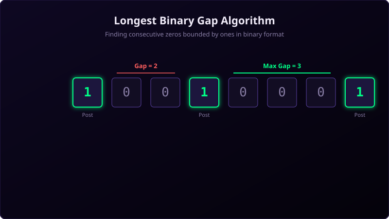

A binary gap is the length of the longest sequence of consecutive zeros that is surrounded by ones in the binary representation of a positive integer.
For example, the number 9 in binary is 1001, which has a binary gap of length 2. The number 20 in binary is 10100, which has a binary gap of length 1 because the trailing zeros are not closed by a final 1.

Imagine you are walking along a long wooden fence. Some parts of the fence have solid vertical posts (1s), and in between them, some boards are missing, leaving empty gap spaces (0s).
If you see a post, and then walk past 3 missing spots, and then reach another post, you found a gap of 3. However, if you pass 4 missing spots but never hit a post at the end before the fence stops, that doesn't count as a gap because it's not closed off.
Step-by-Step Logic Trace
- Convert the decimal number to a binary string using
Integer.toBinaryString(N). - Convert the string into a character array to loop over it.
- Keep track of the index of the last seen
'1'(initialized to 0). - For each character, if it is a
'1', calculate the distance between the current index and the last seen index minus 1. - Update the maximum gap seen so far if the current distance is larger.
- Set the last seen index to the current index and repeat.
Java Implementation
package io.practise.myPractice;
import java.util.Scanner;
public class BinaryGapCodility {
public static void main(String[] args) {
Scanner sc = new Scanner(System.in);
int N = sc.nextInt();
BinaryGapCodility output = new BinaryGapCodility();
int gap = output.solution(N);
System.out.println(gap);
}
public int solution(int N) {
String str = Integer.toBinaryString(N);
char[] arr = str.toCharArray();
int o = 0;
int large = 0;
for (int t = 1; t < str.length(); t++) {
if (arr[t] == '1') {
int temp = t - o - 1;
if (temp > large) {
large = temp;
}
o = t;
}
}
return large;
}
}Conclusion
By keeping track of the index of the last seen '1', we can easily calculate gaps on the fly in a single pass O(Log N) time complexity, which matches the number of bits in the binary string.